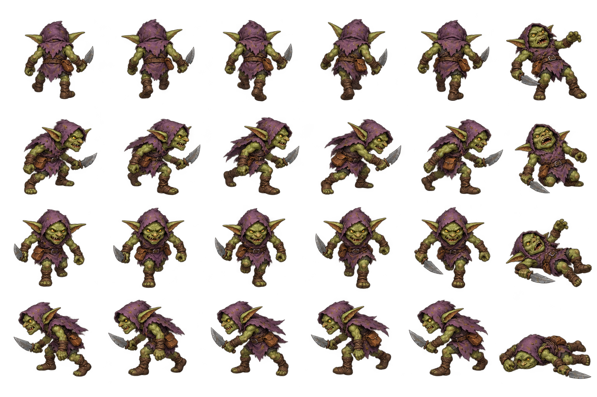

Xem bản hiệu chỉnh bằng atlas metadata đã được duyệt. Trang bên dưới giữ cách cắt đều cũ để đối chiếu lỗi ban đầu.
Cách cắt đều ban đầu — giữ để đối chiếu. PNG có alpha thật, nhưng pose chạm/tràn ô cũ. Game hiện dùng atlas metadata riêng và đã có đủ ba enemy. Xem trang atlas mới để đánh giá bản đã hiệu chỉnh; đây không phải screenshot runtime.
Mở ở zoom 100%. Nếu ảnh chưa xuất hiện, làm theo lệnh copy đúng ảnh. Nền caro là HTML nằm dưới PNG; trang không xóa nền, chỉnh PNG, xuất ảnh hay tải tài nguyên từ mạng.
Nguồn 1536×1024, hiển thị 768×512. Mỗi ô đỏ tương ứng vùng crop 256×256 của loader. Quan sát các pose chạm cạnh: chúng chưa đủ điều kiện đưa vào game.

Đây là phép cắt đều trực tiếp để lộ lỗi biên và lệch pivot. Tỷ lệ cơ thể chưa được chốt. Cột cuối là chuỗi death; không phải idle theo hướng của hàng.
| Hướng | Idle | Walk A | Walk B | Walk C | Walk D | Death |
|---|---|---|---|---|---|---|
| Bắc — nhìn lưng | 0 | 1 | 2 | 3 | 4 | 5 |
| Đông | 6 | 7 | 8 | 9 | 10 | 11 |
| Nam — nhìn mặt | 12 | 13 | 14 | 15 | 16 | 17 |
| Tây | 18 | 19 | 20 | 21 | 22 | 23 |
CSS chạy bốn frame, 8 frame/giây; ô và nền đứng yên để dễ thấy phần hình bị nhảy. Tắt animation tự động nếu hệ điều hành chọn giảm chuyển động.
Trạng thái và nghiệm thu M17 · Prompt và nguồn ảnh thực tế · M16 đã duyệt hướng mỹ thuật